如何打造一款极速分析型数据库
作者: 康凯森
日期: 2021-12-26
分类: OLAP
- 一 极速 OLAP 数据库：预计算 VS 现场计算
- 二 极速 OLAP 数据库：可扩展性
- 三 极速 OLAP 数据库：查询数据流处理
- 四 极速 OLAP 数据库：资源使用
- 五 极速 OLAP 数据库：手动调优 VS 自适应 VS AI 调优
- 六 极速 OLAP 数据库：ServerLess 之极致弹性
- 七 极速 OLAP 数据库：架构 VS 细节
- 八 极速 OLAP 数据库：近似 VS 精确
- 九 极速 OLAP 数据库：性能测试
- 结语
在 数据库从0到0.1 (二)： OLTP VS OLAP VS HTAP 一文中，我们知道，目前数据库主要分为两大类，一类是以事务为主的事务型数据库，一类是以分析为主的分析型数据库。而对于一款分析型数据库而言，性能至关重要，如何打造极致的性能，是分析型数据库永恒的主题，本文我就分享下如何打造一款基于 CPU 的极速分析型数据库。 （GPU，FPGA 等异构计算本文暂不讨论， RDMA, NVM 等新硬件加速本文暂不讨论）
本文将从预计算 VS 现场计算，可扩展性，数据流，资源利用，调优，弹性，架构 VS 细节，近似 VS 精确，性能测试 9个角度来论述如何打造一款基于 CPU 的极速分析型数据库：
一 极速 OLAP 数据库：预计算 VS 现场计算
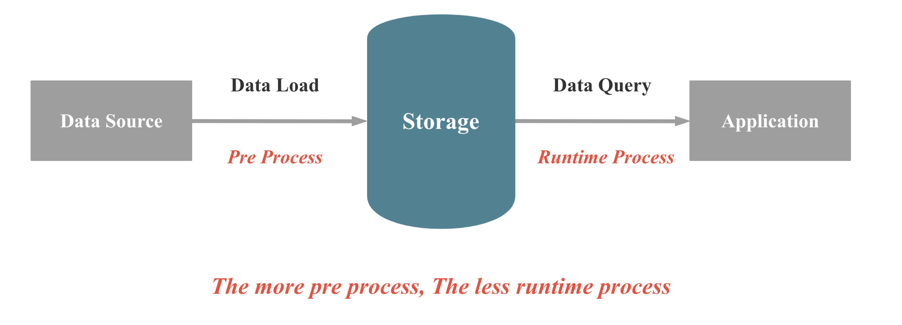
数据库本质上来讲，就是在做两件事情： 数据的存储 和 数据的查询，当数据写入数据库，数据库保证数据不会丢，当我们需要查询或者分析数据时，数据库可以快速，正确地返回我们想要的数据。 如上图所示，在数据库现场计算能力不变的情况，要提升查询性能，我们就有两种大的手段：1，在数据库导入过程，进行一些预处理，减少现场计算的成本； 2，在数据存储时，有空间换时间，减少现场计算的成本。 具体可以分为4类手段：
1.1 Materialized View
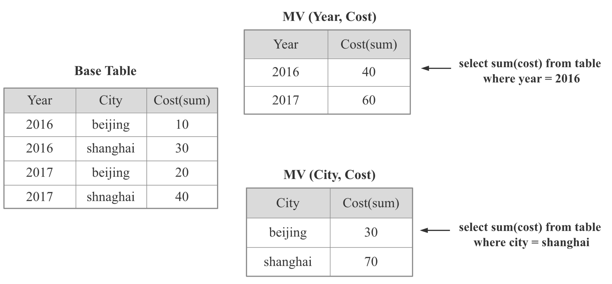
如上图所示：物化视图就是将某个或者某类SQL的查询结果提前计算出来，用导入时延，存储成本换取查询时的高性能。物化视图是 OLAP 数据库的常见加速手段，比如：
- StarRocks 中的 物化视图
- Google Mesa 中的 Rollup
- Apache Kylin 中的 Cube
- Apache Pinot 中的 Star-Tree Index
- Apache Calcite 中的 Lattice
- Dremio 中的 Reflections
物化视图技术涉及的关键点如下：
- 物化视图模型如何表达
- 如何决定对哪些View 或者 SQL 进行物化：一般情况下，只需要少量的物化视图就可以加速大量的查询
- 物化视图的维护： 当 Base 表更新时，物化视图如何进行有效地更新，如何实现增量更新，如何支持多表物化视图
- 查询时如何找到最佳的 物化视图
- 如何根据最佳的物化视图改写查询计划
- 如何在查询性能，导入速度，存储成本 3者之间权衡：Googel Masa的继任者 ———— Google Napa 在这一点给出了很好的答案
那么什么时候物化视图技术是必须的呢？
答案是当你要处理的数据量极大（千亿，万亿），或者数据量集群规模很小（几台，几十台），或查询计算量又很大（几十张表Join，精确去重），而且查询时延要求低，基于 CPU 的现场计算几乎无法满足需求的时候，可以使用物化视图 （我想这也是 Google Masa 和 Google Napa 都重度依赖物化视图的原因）。如果本身数据量不大或者集群资源充足或者查询不是特别复杂，可以考虑直接依靠现场计算 （我想这也是全球 90% 以上的中小企业不需要物化视图的原因）。
1.2 预聚合

OLAP 系统中都会区分维度列和指标列，所谓预聚合，就是在导入时，把相同维度列的数据从多行聚合成一行，维度列值不变，指标列根据关联的聚合函数进行聚合，这样原始1亿行数据，预聚合后可能只有几百万行，现场计算处理几百万数据显然会比处理1一行数据快很多
预聚合也是 OLAP 数据库的常见加速手段，比如：
- StarRocks 中的聚合模型
- Apache Druid 中的聚合模型
1.3 索引
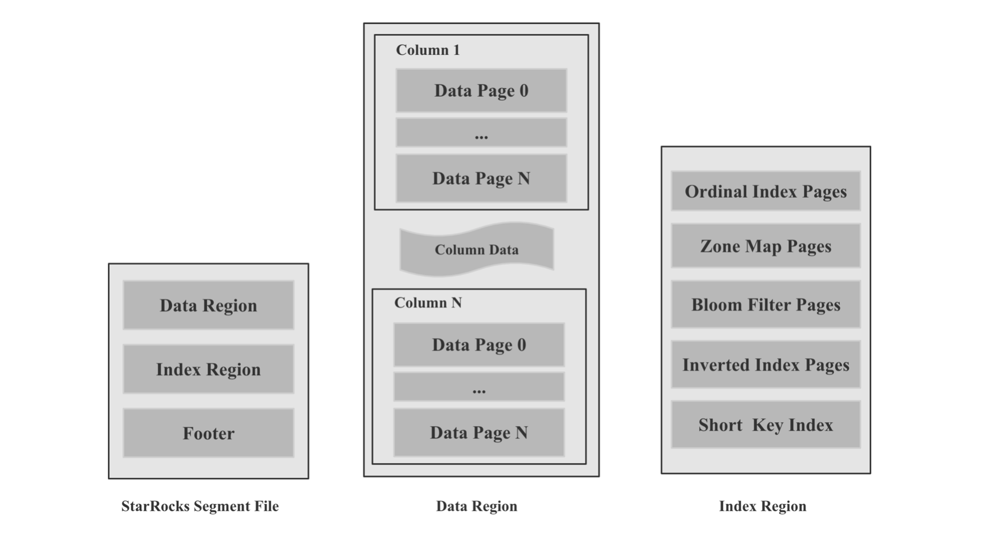
在 数据库从0到0.1 (一)： LSM-Tree VS B-Tree 一文中，我解释了索引的概念，所谓索引，就是原始数据之外的元数据或者数据结构，用来加速查找原始数据中的某个值，或者某个值的偏移量。索引一般分为轻量级索引和重量级索引。 轻量级索引包括 ZoneMap 索引（Max, Min, Has null）等，前缀索引，重量级索引包括 SkipList 索引，B-Tree 家族 索引，Hash 索引，Bitmap 索引， Bloom Filter 索引等，索引的具体技术细节本文不展开讨论，索引的难点有以下几点：
- 数据库如何根据不同的数据规模，数据类型，数据基数自动选择构建不同类型的索引
- 一次查询可以使用多种索引时，如何自适应的选择最佳的索引
- 写入速度，存储成本，查询性能 3者之间的权衡
总而言之，索引的意义是避免存储层读取大量无关的数据，进而加速查询，是数据库存储层必不可少的加速手段。
1.4 Cache
Cache 在计算机中无处不在，如果我们明确一个相同的查询之后会被多次查询到，我们就可以对第一次查询进行Cache。 Cache 可以在多个层次，比如操作系统本身的 Page Cache，数据库存储层针对文件或者 Page, Block 级别的 Cache，数据库计算层针对分区，Segment，结果集的 Cache。 Cache 的难点在于如何避免频繁换入换出，如何保证 Cache 的命中率，讨论 Cache 的文章很多，本文就不深入展开。
二 极速 OLAP 数据库：可扩展性
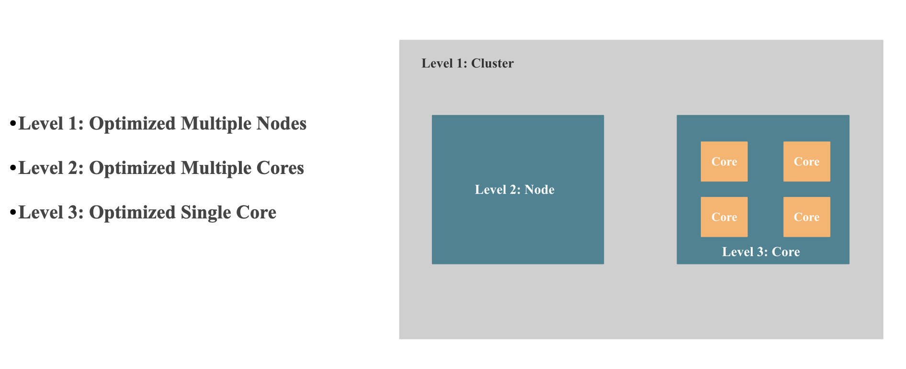
现在的分析型数据库几乎都是分布式数据库，而我们知道分布式数据库最关键的就是 Scale 的能力，为了实现极致的性能，从 Scale 的视角来看 一个数据库必须拥有以下三方面的能力：
- 多机 Scale 的能力 或者说是 能充分调用整个集群资源的能力： 简单点说，就是查询性能可以随着机器数线性扩展。 多机 Scale 能力主要看 分布式执行框架是不是可以多机线性扩展，比如：StarRocks 的 MPP 分布式执行框架就是可以多机线性扩展的，Apache Kylin, Apache Druid, ClickHouse 的 Scatter-Gather 多机执行框架就是无法多机线性扩展的，具有单点瓶颈，没有 Shuffle 的能力，所以无法高效实现高基数聚合，大表Join 等需要 Shuffle的查询。
- 多核 Scale 的能力 或者说 能充分调用单机上多核的能力：简单点说，就是查询性能可以随着 CPU 核数近似线性扩展。 多核 Scale 能力主要看单机并行执行框架是不是可以多核线性扩展， 比如：StarRcoks 旧的并行框架线性扩展能力就比较差，StarRcoks 新的 Pipeline 并行框架多核线性扩展能力就很强，还有不同算子并行算法的实现方式，Lock 的优化，NUMA 友好的设计，CPU 亲和性调度, False sharing, 异步执行等。
- 单核 CPU 性能挖掘到极致：为了将 CPU 性能挖掘到极致，我们就需要减少查询执行使用的 CPU 指令数 和 CPI，尽可能触发 CPU SIMD 指令优化，减少 CPU Cache Miss， 一般有向量化执行和查询编译两种手段，StarRocks, ClickHouse，Snowflake 等系统采用了 向量化执行的手段， SingleStore, Hyper, NoisePage 等系统采用了查询编译的手段。 向量化执行细节会在后文提到, 查询编译之后会专门写一篇文章介绍。
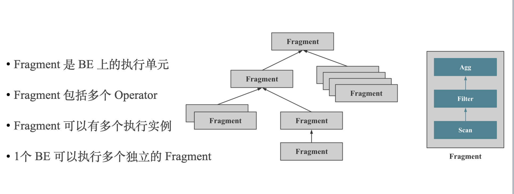
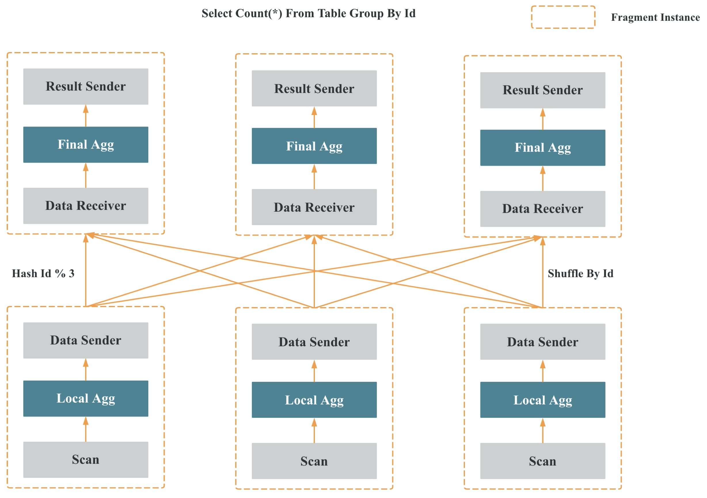
上两张图是 StarRocks MPP 分布式执行框架的示意。
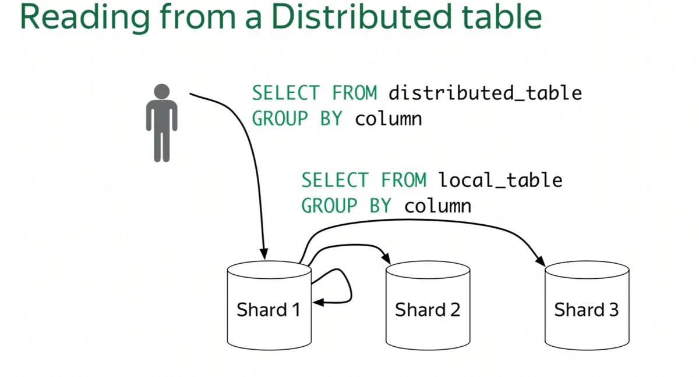
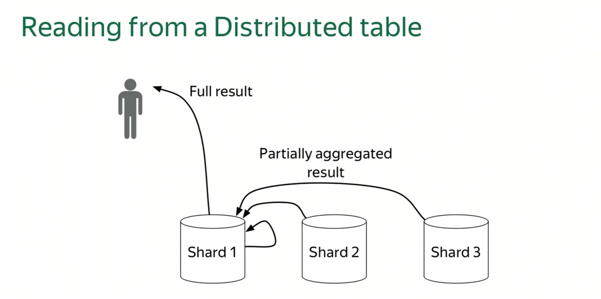
上两张图是 ClickHouse Scatter-Gather 执行框架的示意。
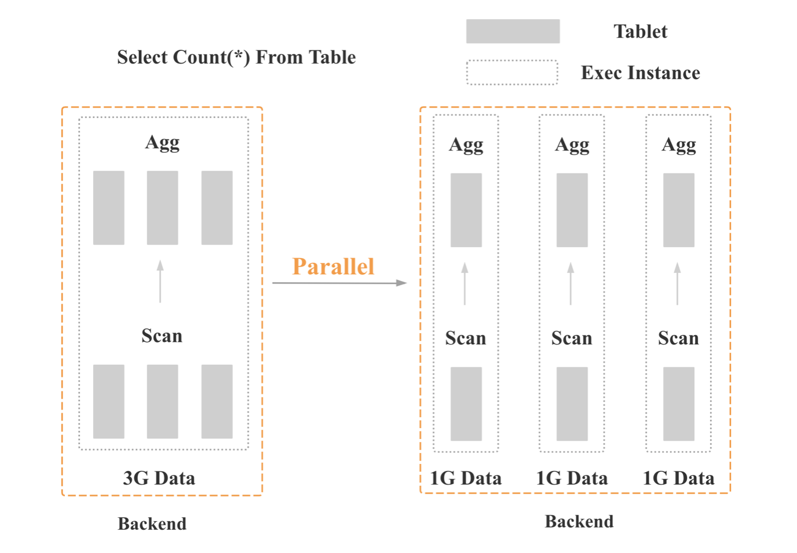
上图是 StarRocks 旧版并行框架的示意，核心是数据并行。
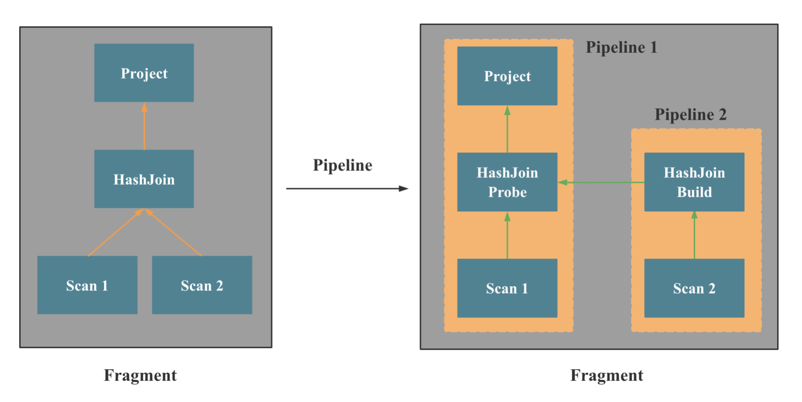
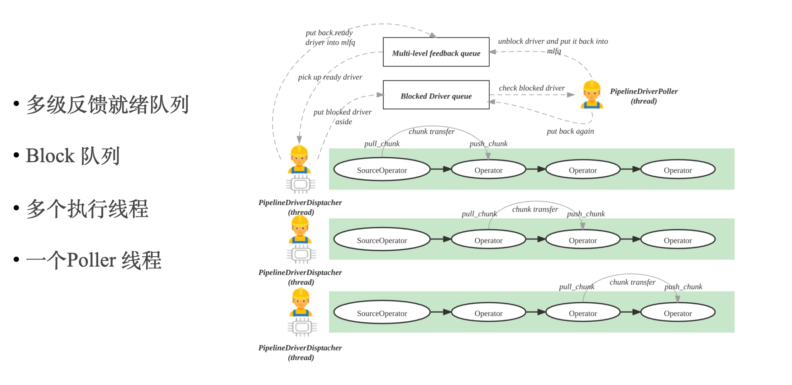
上两张图是 StarRocks Pipeline 并行执行框架的示意，核心是在 Fragment 和 Operator 之间引入了 Pipeline 的概念，将内核态多线程调度变成用户态协程调度。
三 极速 OLAP 数据库：查询数据流处理
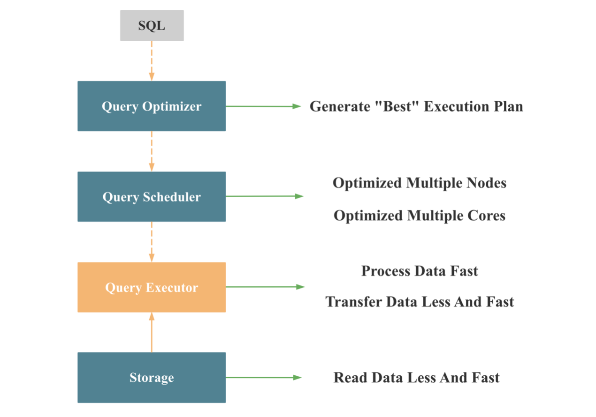
我们再看下，从查询数据流处理的角度，我们如何打造一款极速的数据库，如上图所示，当一个数据库接受到一个 SQL 查询时，会依次通过四大模块进行处理：查询优化器，查询调度器，查询执行器，存储层，依次解决四个问题：
- 将 SQL 文本转换成一个 “最佳的” 分布式物理执行计划
- 将执行计划调度到计算节点
- 计算节点执行具体的物理执行计划
- 计算节点从存储层读取数据
3.1 查询优化器
查询优化器的核心任务是生成一个 “最佳的”（执行 Cost 最低）的分布式物理执行计划，查询的数据量越大，查询的 SQL 越复杂，查询优化器的意义越大，因为不同的物化执行计划，执行时间可能相差成千上万倍。 查询优化器就像军队的元帅，一旦决策错了，底下的将军和士兵战斗力再强也注定失败。 所以一个 OLAP 数据想要在复杂查询下实现高性能，必须拥有一个成熟，高效的优化器。 正式因为查询优化器如此重要，StarRocks 选择了从零自研一个 CBO 优化器，StarRocks 的优化器主要基于 Cascades 和 ORCA 论文实现，并结合 StarRocks 执行器和调度器进行了深度定制，优化和创新。完整支持了 TPC-DS 99 条SQL，实现了公共表达式复用，相关子查询重写，Lateral Join， CTE 复用，Join Rorder，Join 分布式执行策略选择，Global Runtime Filter 下推，低基数字典优化等重要功能和优化。
3.2 查询调度器
为了能充分利用多机的资源，除了 MPP 多机并行执行框架外，查询调度器也必须能均衡多机上的负载，尽可能避免热点的出现； 为了能充分利用多核的资源，Pipeline 并行执行框架，在多核调度时也需要考虑多核上负载的均衡。
3.3 查询执行器
查询执行器单核想要实现极致的查询性能，需要满足两点： 1 处理的数据尽可能少且尽可能快； 2 网络传输的数据尽可能少且尽可能快。查询执行器处理数据量的多和少完全由查询优化器决定，查询执行器本身几乎无法决定；查询执行器处理数据如何尽可能快，就是向量化执行器的执行，我们在下一小节单独讲。 网络传输时数据如何尽可能少，尽可能快，如下图所示：
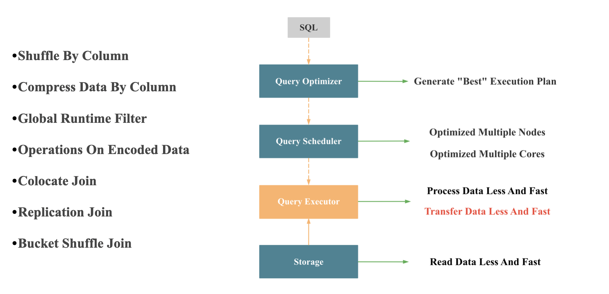
- 按列 Shuffle: 向量化引擎中按列处理更加高效
- 按列 压缩
- Join 分布式执行时尽可能避免网络传输：主要由查询优化器和查询调度器合作完成
- Global Runtime Filter: StarRocks 实现的 Global Runtime Filter 在如何减少网络传输上做了很多优化，这个功能之后我司会安排专门的分享介绍
- Operations On Encoded Data: 主要是针对有字典编码的低基数字符串进行的优化，StarRocks的创新之处在于，在支持数据自动 Balance 的分布式架构下，实现了全局字典的维护，并结合 CBO 优化器，对包含低基数字符串的查询进行了全面加速，这个大功能之后我司也会安排专门的分享介绍。 这里我简单介绍下，对低基数字符串查询全面加速的原理：
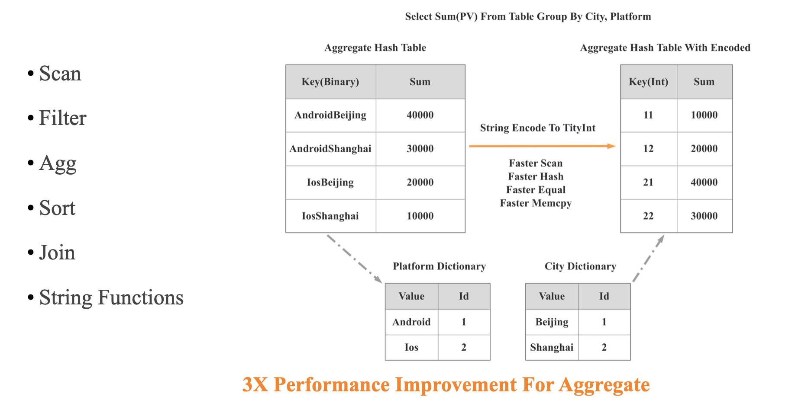
如上图所示，对于SQL Group By City, Platform, 如果 City, Platform 都是低基数字符串，我们就可以将对两个字符串列的 Hash 聚合变为针对两个 Int 列的 Hash 聚合，这样在 Scan, Shuffle，Hash，Equal，Memcpy 等多个重要操作上都会变快很多，我们实测整体查询性能可以有 3 倍的提升。
3.4 存储层
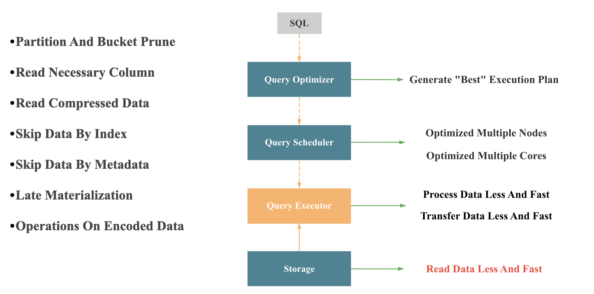
如上图所示，整个查询执行要快，存储层返回数据必须要快。 存储快的核心就是读更少的数据，且读的更快。 读更少数据的优化包括：
- 分区分桶裁剪
- 列裁剪
- 按列存储
- 按列压缩
- 必要的索引
- 根据索引和元数据尽可能提前过滤无关数据
- 延迟物化
读的更快的手段包括：
- Operations On Encoded Data
- 向量化处理
- 减少 IO 和 Seek 次数
3.5 向量化执行器
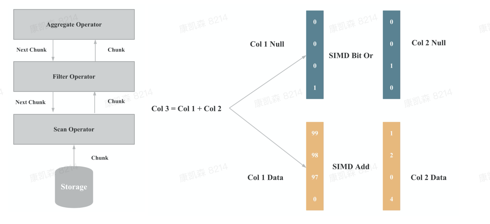
向量化在实现上主要是算子和表达式的向量化，上图一是算子向量化的示例，上图二是表达式向量化的示例，算子和表达式向量化执行的核心是批量按列执行，批量执行，相比与单行执行，可以有更少的虚函数调用，更少的分支判断；按列执行，相比于按行执行，对 CPU Cache 更友好，更易于SIMD优化。
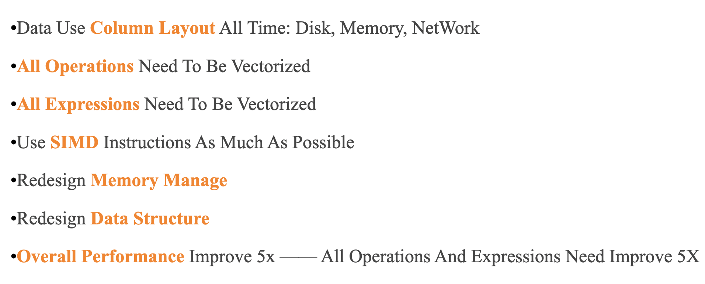
如上图所示，向量化执行工程的挑战包括：
- 磁盘，内存，网络的数据都按照列式布局
- 所有的算子都必须向量化
- 所有的表达式都必须向量化
- 尽可能使用 SIMD 指令
- 尽可能优化 CPU Cache
- 重新设计内存管理机制
- 重新设计重要算子的算法和数据结构
- 整体性能要提升5倍，意味着所有算子和表达式性能都必须提升 5 倍，任何一个算子和表达式慢了，整体性能就无法提升5倍。
向量化执行的架构没有任何难点，难点是工程实现，难点是实现细节。 向量化执行的目的就是优化性能，所以整个向量化执行其实是一个巨大的性能优化工程。
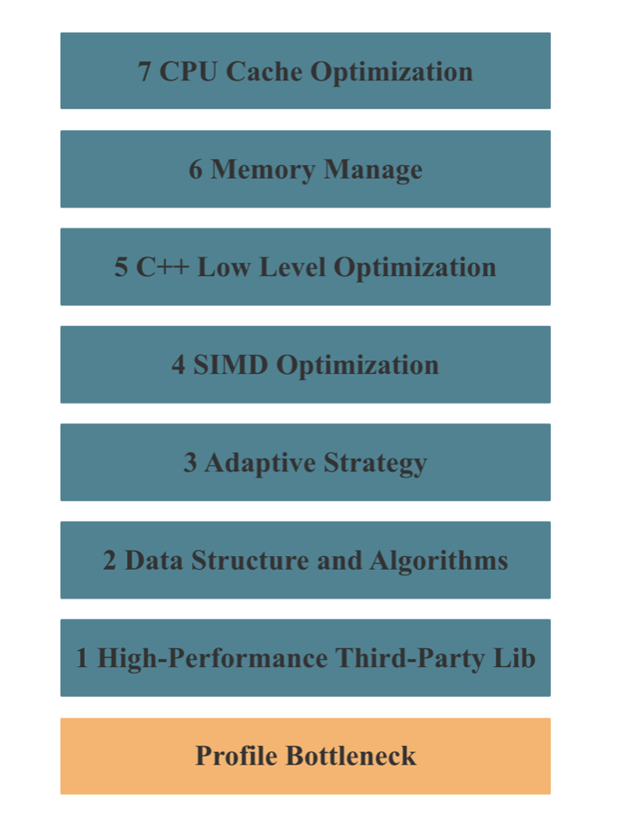
如上图所示，StarRocks 向量化执行性能优化的手段主要包括以上7种，其中 2 - 7 任何一个环节处理不好，都无法实现一个高性能的向量化执行引擎。
四 极速 OLAP 数据库：资源使用
性能优化的本质就是优化各种系统资源的使用，我们再回顾第三部分针对查询优化的各种手段，其实本质上都是在优化 CPU, 内存，IO，网络等系统资源的使用:
- 存储层的 Read Data Less And Fast 其实是在优化 IO 资源
- 计算层的 Transfer Data Less And Fast 其实是在优化网络资源
- 计算层的 Process Data Less And Fast 其实是在优化 CPU 和 内存资源
如果我们解决一个问题的算法复杂度相同，那么谁的实现更优，就是看谁做的无用功更少，使用的系统资源更少。
五 极速 OLAP 数据库：手动调优 VS 自适应 VS AI 调优
因为用户的硬件条件各式各样，用户建模方式，使用场景，查询模式无法确定，用户数据特点千差万别，所以一个数据库的优化可能在 A 场景下是正向的，但在 B 场景下却是负向的，所以数据库开发者的做法一般是会增加各种配置或者变量，让DBA 或者用户有一定的调优空间，同一条查询，在不同的配置下，性能可能会有几倍甚至几十倍的差距。
但是手动调优不仅需要高昂的人力成本，而且调优的难度也十分大，需要调优者对数据库本身的原理和业务场景都有深刻理解，才能调出可能的最佳配置。 数据库解决这个难题的思路有两大类，一类是数据库内核进行自适应，尽可能去掉配置或者变量，不向用户暴露，自适应算法或者策略可以自动在不同的 context 下自动选择最适合的算法或者策略； 另一类就是引入机器学习，基于大量历史数据去自动选择出最合适的配置或者变量。比如像索引，执行算法，调度策略，优化器的基数估计，Cost 模型，分区分桶方式，排序键的选择等等，理论上都可以基于历史数据进行自动调优和持续优化，CMU的 Andy Pavlo 副教授就专门建了个创业公司 OtterTune 做这件事情。
数据库内部的自适应策略和外部的机器学习调优两者可以同时进行，原理本质上都是根据用户的真实数据，真实查询去获取更多信息，让 Context 范围更小，更准确，这样就可以做出更准确，更具有针对性的优化。StarRocks 目前在自适应策略上有了很多尝试，未来也会考虑基于机器学习的方式进行调优。
六 极速 OLAP 数据库：ServerLess 之极致弹性
前面提到的各种优化思路都有一个前提：那就是物理资源在短时间内相对固定，但是随着 ServerLess 数据库 的逐步普及和发展，我们可以在短时间内快速 Scale Up 和 Scale Out，将计算资源短时间内增加几倍，甚至几十倍。 那么在查询成本不变的情况下，我们就可以通过短时间内弹出更多资源来加速查询。 因为 Cost(10 台计算节点 每个节点耗时100秒) = Cost(100 台计算节点 每个节点耗时10秒)。 当然要实现这一点，一个数据库至少要满足以下特性：Cloud-Native，存储计算分离，秒级极致弹性，强大的多核和多机扩展能力，资源隔离能力，Workload 预测能力，自动解决数据倾斜能力等。 我认为，在未来极致弹性这一点上的优化将会是最重要的。
七 极速 OLAP 数据库：架构 VS 细节
2018年，我职场中的第一位 Mentor，锐哥在美团内部分享 每天数百亿用户行为数据，美团点评怎么实现秒级转化分析？ 时，曾讨论过，系统性能优化，有没有到拼编程语言这一步，还是只是在架构和算法层面不断优化就可以了。 那时的我没有答案，不过现在的我有了明确的答案，如果我们真的想去打造一个极致性能的系统或者数据库，那么我们不仅需要架构层面设计足够合理，细节的工程实现也同样十分重要，极致的性能来自优秀的架构 + 极致的工程细节。 从本文的前面我们可以看出，向量化执行架构层面不重要，重要的是工程细节；MPP 多机并行机制重点在架构；CBO 优化器和 Pipeline 单机并行执行框架则不仅架构要合理，工程细节也同样十分重要。 有人说，这不是一个显然易见的答案吗？其实或许不是。 如果你认可这个观点，那么当你打造一个 OLAP 数据库时，就不会选择用 Java 等语言去实现查询执行层和存储层；也不会像 ClickHouse 一样 Bottom-Up 的从细节和算法层面出发去设计整个系统。
八 极速 OLAP 数据库：近似 VS 精确
作为一款分析型数据库，还有一种普遍采用的加速手段，就是近似计算，近似计算可以满足用户需求主要是基于两点：
- 当分析师进行探索性分析时，可能只需要对数据的量级，数据特点，发展趋势有一个大概的了解，不需要完全精确的数据
- 当数据量很大时，完全精确计算成本会很高，比如精确的去重数，精确的百分位数。
近似计算在 OLAP 数据库中一般有两种实现方式：
- 使用近似数据结构计算：比如利用 HyperLogLog 计算近似去重数，利用 TDigest 计算近似百分位 （https://blog.bcmeng.com/post/tdigest.html）
- 基于统计学去抽样估算：假如原始数据有1亿，就抽取1百万行数据进行计算，然后根据抽样出的数据去估算一亿数据的max值，max值，基数值等，这种方式的缺点是：不同的数据分布具有不同的统计特点，所以误差可能较大。
九 极速 OLAP 数据库：性能测试
对于一个大型开源数据库，由于多人协作开发，每个开发者的知识背景不同，对数据库本身的了解程度不同，写出性能回退的代码不可避免，所以一个数据库想要持续保持性能上的领先，就必须做好性能测试，防止性能回退。 在 StarRocks 的开发过程中，发生过很多性能回退的Case。数据库性能测试可以分为两大类：
- 自身的性能回归测试或者 Benchmark 测试： 一方面可以防止版本间的性能退化，另一方面也可能通过每次性能回退的原因找到新的优化点
- 竞品的性能对比测试： 一方面可以知道自己哪些类型查询的做到了世界第一，哪些类型的查询需要继续加强，另一方面也可以发现潜在的性能优化点。
结语
本文分享了我对如何打造一款极速分析型数据库的粗浅思考和理解，欢迎大家批评指正。 我们 StarRocks 致力于成为全球最优秀的 OLAP 数据库，我们 StarRocks 查询团队也致力于打造全球最优秀的查询引擎，如果你对数据库感兴趣，或者对性能优化感兴趣，诚挚邀请你加入我们 StarRocks 团队。
《OLAP 性能优化指南》欢迎 Star&共建
欢迎关注微信公众号